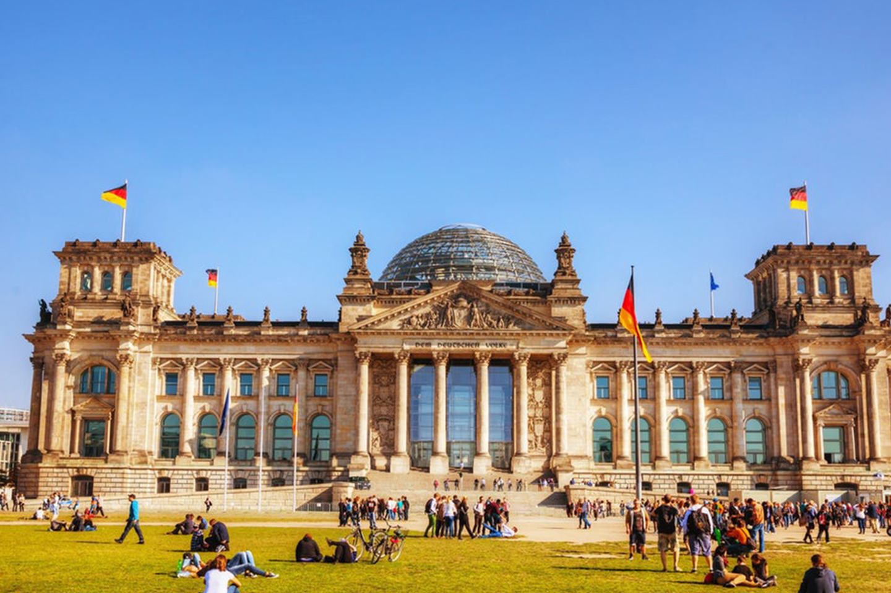
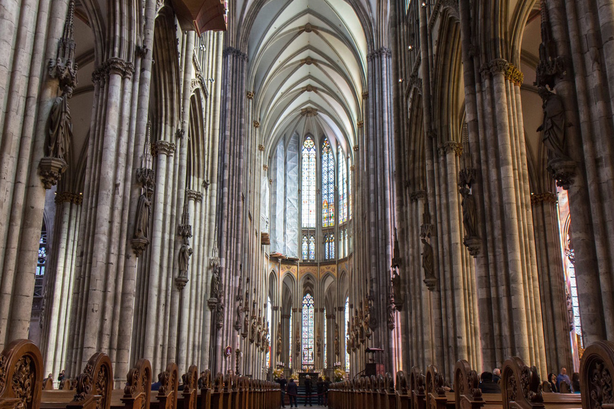
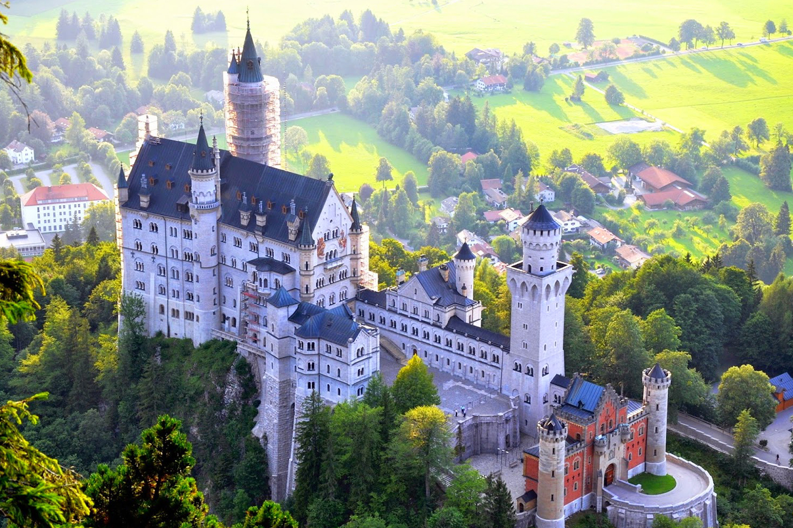
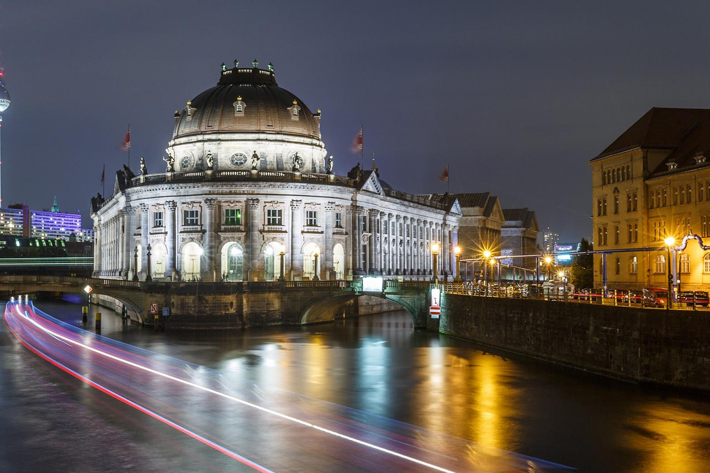
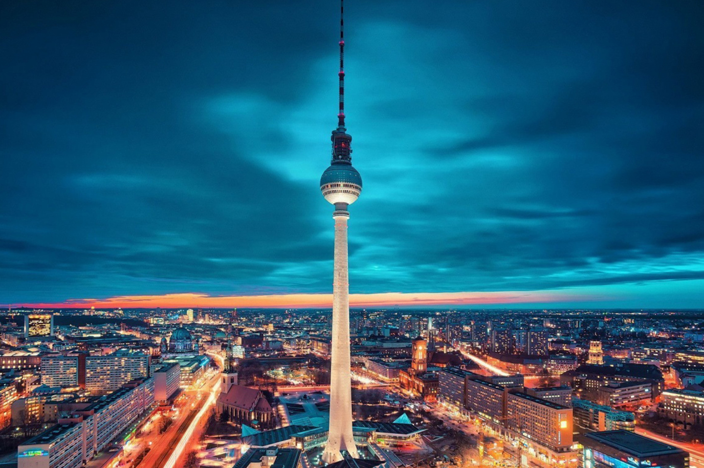
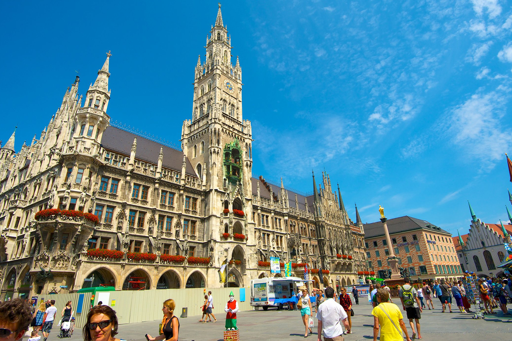
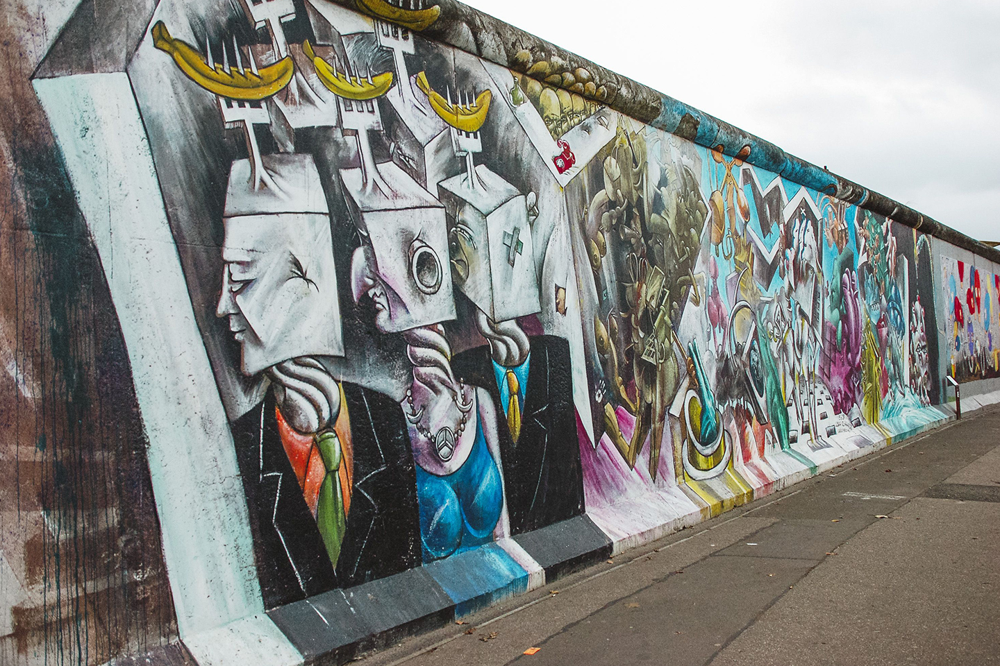
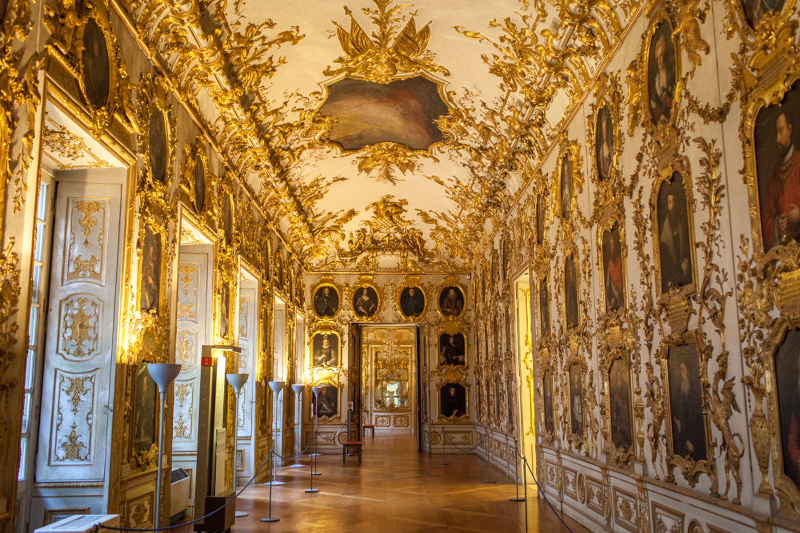

La puerta más famosa de Berlín y de Alemania fue concluida en 1791. Fue edificada durante el reinado de Federico II de Prusia por el arquitecto Carl Gotthard Langhans en uno de los 18 accesos de la muralla de Berlín, tomando como modelo la entrada de la Acrópolis de Atenas.
Edificio del Reichstag

El actual edificio del parlamento alemán, construido en Berlín (1894) con un estilo neorrenacentista, es famoso por haber sido incendiado en 1933 por orden de Adolf Hitler para culpar a los judíos.
Catedral de Colonia

La imponente catedral gótica es sobrecogedora y provoca admiración hacia los constructores que fueron capaces de edificarla con los recursos arquitectónicos de épocas pasadas.
Castillo de Neuschwanstein

Este castillo fue construido en 1869 por Luis II de Baviera. Es uno de los lugares de turismo en Alemania más frecuentados. Se encuentra cerca de la ciudad bávara de Füssen y es el inmueble más fotografiado del país. Walt Disney lo tomó como modelo para el Castillo de la Bella Durmiente del parque Disneyland.
Isla de los Museos

Es una isla situada en el centro de Berlín, en el curso del Río Spree, que alberga seis espacios: Museo Antiguo, Museo Nuevo, Museo de Pérgamo, Museo Bode, Galería Nacional Antigua y Galería James Simon.
Torre de Televisión de Berlín

Esta torre de 1969 fue una de las más importantes obras de ingeniería de Alemania Oriental, país satélite de la URSS durante la era soviética. Su altura original fue de 365 metros, alcanzando 368 metros con la nueva antena instalada en los años noventa.
Marienplatz

La “Plaza de María” es la más importante de Múnich y viene de la época de la fundación de la ciudad en 1168. Es la plaza central muniquesa y alberga emblemáticas edificaciones de la capital bávara, conectando con sus principales calles comerciales.
East Side Gallery

En 1989, el pueblo alemán derribó el muro construido en 1961 por el gobierno de Alemania Oriental para separar los sectores este y oeste de Berlín.
La Residencia de Múnich

Es el palacio urbano alemán de mayor tamaño y actualmente alberga uno de los principales museos europeos en artes decorativas. Fue un palacio de los reyes bávaros en el centro de Múnich y sus primeras edificaciones datan del siglo XIV.